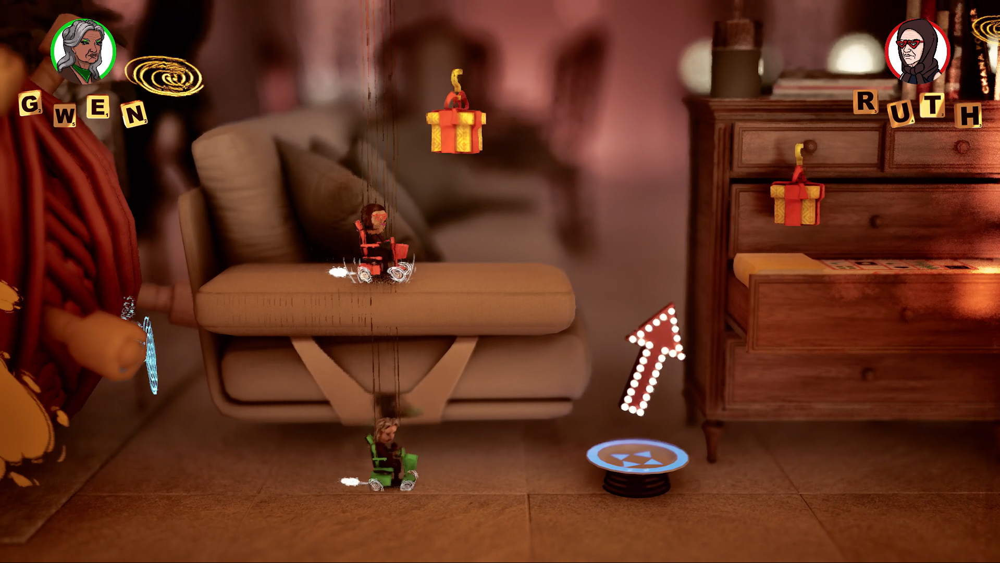
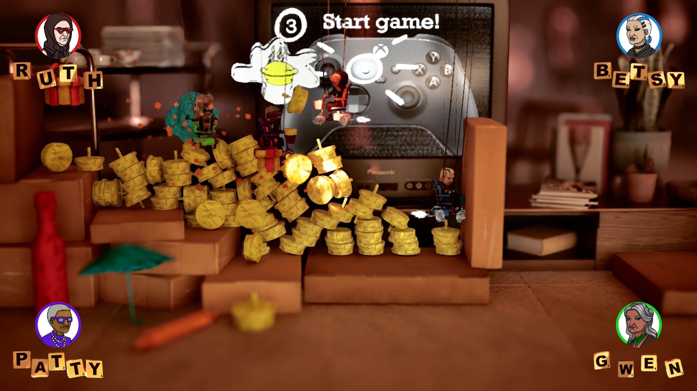
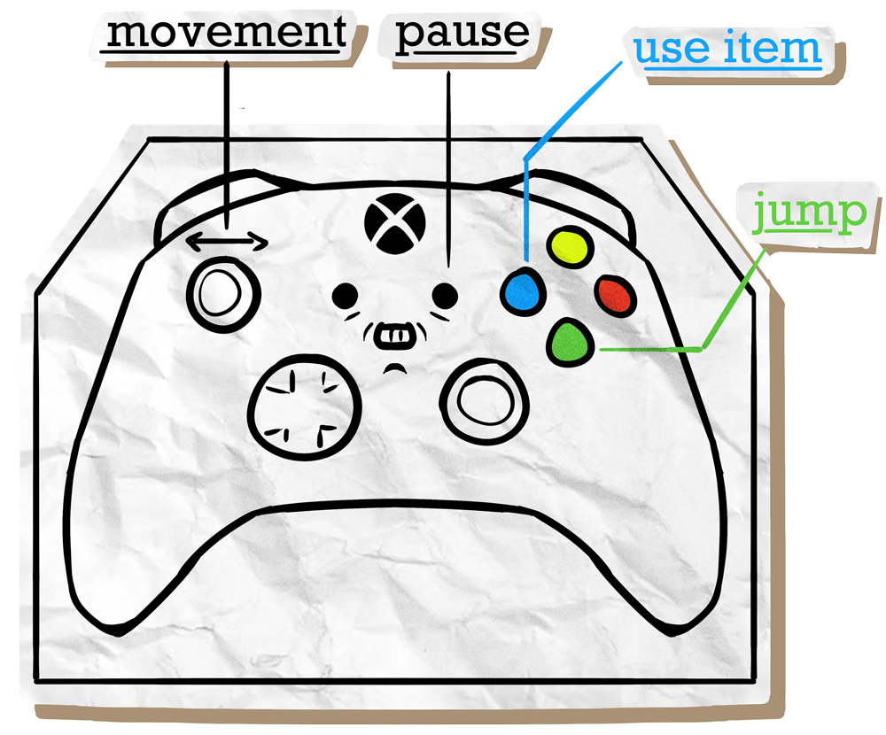
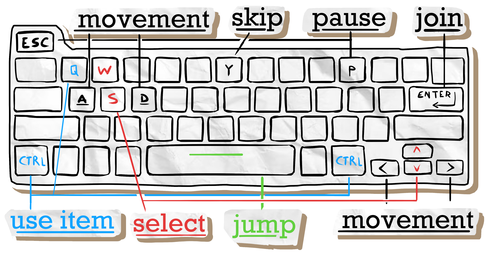
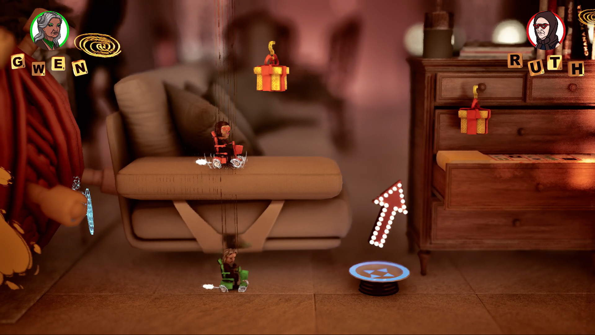
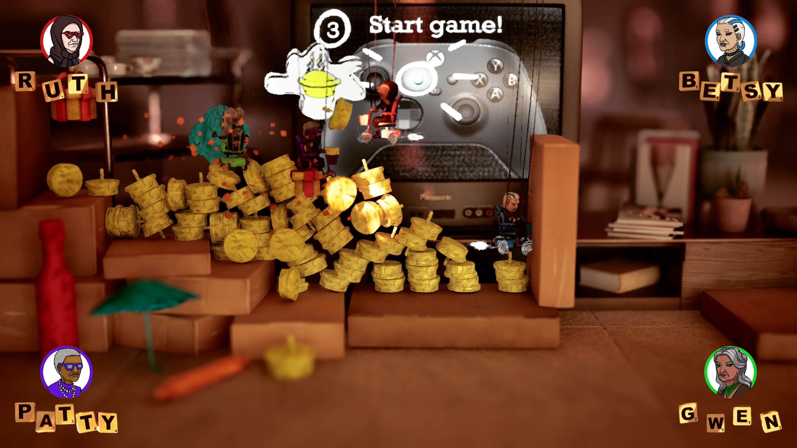
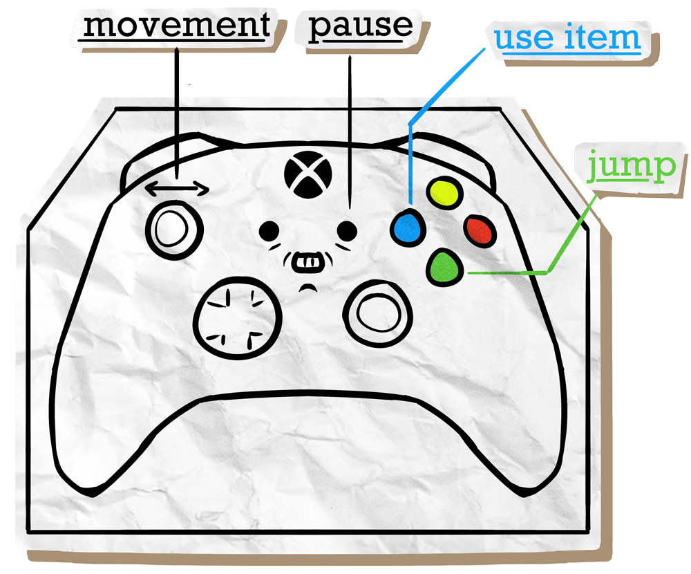
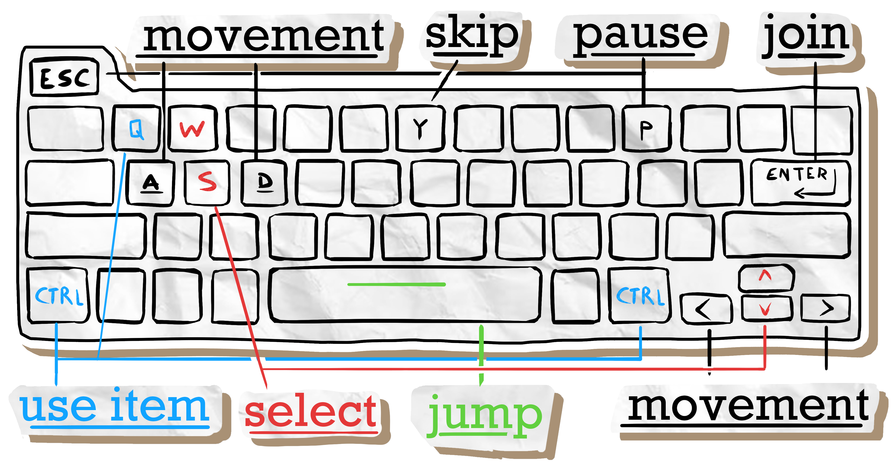

Not Today, Darling!
Szybki, lokalny wyścig side‑scrolling. Chaos i frajda.
Trailer
Rola — Audio
Odpowiadałem za sound effects, implementację i miks: paleta SFX gameplayu, UI, warstwy crowd/ambience oraz integrację i miks w silniku dla czytelności przy szybkiej akcji. System reaguje na stany wyścigu i zdarzenia gracza.
Gameplay Highlights
- Responsywne SFX powiązane z akcjami gracza i przeszkodami
- Hierarchia miksu zoptymalizowana pod czytelność (1–4 graczy)
- Niewchodzące w drogę warstwy dynamiczne przy intensywnych momentach
Implementacja
- Parametry/stany dla cooldownów i burstów
- Oszczędna organizacja assetów, spójne poziomy głośności
- Szybkie iteracje z zespołem gameplay
Współpraca zespołu
Mój zespół to wspaniali ludzie! Pracowaliśmy tak dobrze razem, że postanowiliśmy dodać dodatkowy element do gry — nagraliśmy oryginalne voiceline'y dla postaci babć. Każda babcia ma swój unikalny charakter i głos, co dodaje uroku i humoru do rozgrywki.
Voiceline'y Babć
Posłuchaj oryginalnych nagrań głosowych naszych postaci:
Zespół
Galeria
 







Próbka Audio
Jeden przykład dźwięku z gry. Użyj odtwarzacza poniżej.
Pobierz
Pobierz grę na itch.io:
- Not Today, Darling! on itch.io
- Windows build (1.0 GB), Linux build (967 MB)
Postępy Audio — Tygodnie
Tydzień 02 — Prototypowanie & Research
Badanie stylu dźwiękowego i referencji, plan SFX/UI, testy pipeline'u.
DevlogTydzień 03 — Start prototypu
Dokumentacja systemu audio, backlog SFX, założenia miksu i czytelności.
DevlogTydzień 04 — Łączenie elementów
Mapowanie zdarzeń do RTPC/states, eksperymenty z warstwami tła.
DevlogTydzień 05 — Shaping Up Our Vision
Projekt miksu pod wyścig 1–4 graczy, selektywna głośność i priorytety.
DevlogTydzień 06 — 3, 2, 1, START!
Implementacja podstawowych zdarzeń SFX, sygnałów start/meta, UI.
DevlogTydzień 07 — Pit stop finished
Optymalizacja pamięci SFX, porządki w bankach, ujednolicenie namingów.
DevlogTydzień 08 — These grannies are bussin
Warstwy crowd/ambience, krótkie loopy tła, kontrola transjentów.
DevlogTydzień 09 — Lights, FX, Action!
Soundy kolizji/hazardów, dopasowanie do FX/światła, czytelność.
DevlogTydzień 10 — Production‑Ready Race
Stabilizacja miksu, bus processing, limiter na masterze gry.
DevlogTydzień 11 — Polish & Refinement
Balans UI vs. gameplay, fine‑tuning envelope'ów, final pass.
DevlogTydzień 12 — Start, Journey and now the End
Finalne renderingi, QA audio, checklisty, eksport buildów.
Devlog